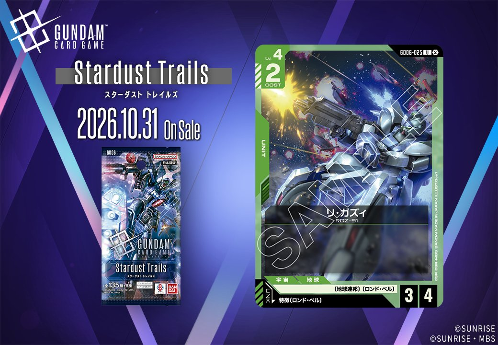
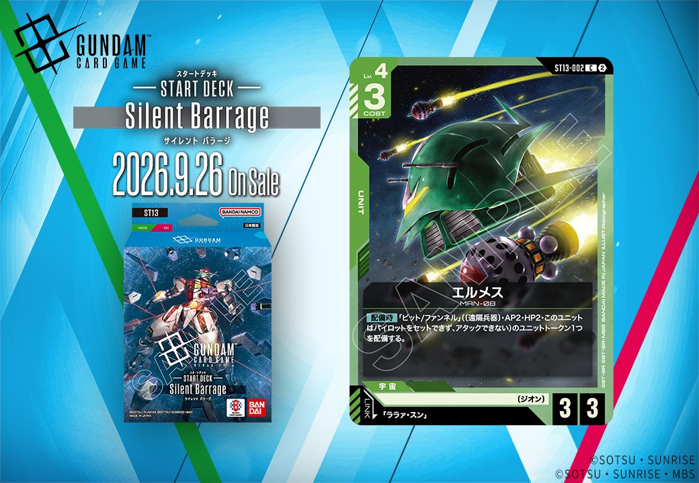

今回は緑のUNIT2枚を取り上げます。Stardust Trailsからは、特徴にロンド・ベルを持つPILOTとのリンクを備える「リ・ガズィ」(GD06-025)が2026年10月31日発売、ST13からは「ララァ・スン」とのリンクを持つ「エルメス」(ST13-002)が2026年9月26日発売となります。いずれもリンクを軸にしたUNITで、それぞれのリンク条件を確認しておきましょう。

リ・ガズィ (GD06-025)
| 色 | 緑 | タイプ | UNIT |
| Lv | 4 | コスト | 2 |
| AP | 3 | HP | 4 |
| 特徴 | 〔地球連邦〕、〔ロンド・ベル〕 | ||
| リンク条件 | 特徴にロンド・ベルを持つPILOT | ||
リ・ガズィ (GD06-025) は COST2 で AP3/HP4 と、緑のバニラユニットとして標準的なコスト効率を持つ。効果を持たない分、盤面に素直な打点を供給できる点が持ち味となる。 リンク条件は特徴に〔ロンド・ベル〕を持つパイロットで、アムロ・レイ(GD05-085)などを搭載してリンク中の効果を活かす運用が現実的。2026-10-31 発売の Stardust Trails 収録カードとして、緑のロンド・ベルデッキの数合わせを担える。

エルメス (ST13-002)
| 色 | 緑 | タイプ | UNIT |
| Lv | 4 | コスト | 3 |
| AP | 3 | HP | 3 |
| 特徴 | 〔ジオン〕 | ||
| リンク条件 | 「ララァ・スン」 | ||
効果: 【配備時】「ピット/ファンネル」((遠隔兵器) AP2・HP2・このユニットはパイロットをセットできず、アタックできない)のユニットトークン1つを配備する。
エルメス(ST13-002)はCOST3・AP3/HP3の緑ユニットで、【配備時】に「ピット/ファンネル」のAP2・HP2遠隔兵器トークンを1つ配備する。単体でも合計盤面AP5/HP5相当を展開でき、配備段階から数的優位を作れるのが持ち味。トークンはパイロットセット不可・アタック不可のため、あくまで壁や補助的な役割になる点は留意したい。リンク先は「ララァ・スン」で、2026-09-26発売のST13収録カード。

関連カード
-
 ジェガン(GD05-027)緑系デッキ内採用率5.8% (261デッキ)
ジェガン(GD05-027)緑系デッキ内採用率5.8% (261デッキ) -
 アムロ・レイ(GD05-085)緑系デッキ内採用率5.7% (256デッキ)
アムロ・レイ(GD05-085)緑系デッキ内採用率5.7% (256デッキ) -
 νガンダム(GD05-017)緑系デッキ内採用率5.7% (255デッキ)
νガンダム(GD05-017)緑系デッキ内採用率5.7% (255デッキ) -
 リ・ガズィ（ケーラ機）(GD05-029)緑系デッキ内採用率5.7% (255デッキ)
リ・ガズィ（ケーラ機）(GD05-029)緑系デッキ内採用率5.7% (255デッキ) -
 リ・ガズィ(GD05-019)緑系デッキ内採用率5.4% (241デッキ)
リ・ガズィ(GD05-019)緑系デッキ内採用率5.4% (241デッキ) -
 アムロ・レイ(GD05-085_p1)緑系デッキ内採用率0% (0デッキ)
アムロ・レイ(GD05-085_p1)緑系デッキ内採用率0% (0デッキ) -
ケーラ・スゥ(GD05-086)緑系デッキ内採用率0.7% (30デッキ)
-
 ザクⅡ(ST03-008)緑系デッキ内採用率18.2% (814デッキ)
ザクⅡ(ST03-008)緑系デッキ内採用率18.2% (814デッキ) -
 リック・ドム(GD01-030)緑系デッキ内採用率17.4% (775デッキ)
リック・ドム(GD01-030)緑系デッキ内採用率17.4% (775デッキ) -
 ザクⅡ（シャア・アズナブル機）(ST03-006)緑系デッキ内採用率11.9% (532デッキ)
ザクⅡ（シャア・アズナブル機）(ST03-006)緑系デッキ内採用率11.9% (532デッキ)